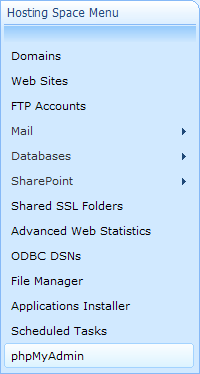

Custom Links in Account and Space Menu
Translations:
You have an ability to add custom links in both "Account" and "Space" menu. There may be links to some external applications such as phpMyAdmin, Web SQL Admin, etc:

Menu items for both menus are described in "App_Data\ModulesData.config" file of Portal.
Open this file for edit and find at the bottom <ModulesData> section.
To add a custom link to Account menu add new "MenuItem" element in "UserMenu" ModuleData.
To add a custom link to Space menu add new "MenuItem" element in "SpaceMenu" ModuleData.
MenuItem Element Attributes
pageID
ID of the page. This is a mandatory attribute and if it's not specified menu item will not be shown.
Note: WebsitePanel_Pages.config should contain corresponding <Page /> element. For
So, you have two options:
1. Specify pageID of some existing page, e.g.:
<MenuItem pageID="Home" url="http://mysql.domain.com/" title="phpMyAdmin" target="_blank" resourceGroup="MySQL4"/>
or
2. Add a page definiton into "App_Data\WebsitePanel_Pages.config" with an unique ID, say "phpMyAdmin" as following:
<Page name="phpMyAdmin" roles="Administrator,Reseller,User" hidden="True" />
and then MenuItem:
<MenuItem pageID="phpMyAdmin" url="http://mysql.domain.com/" title="phpMyAdmin" target="_blank" resourceGroup="MySQL4"/>
url
Full qualified (protocol, host, port, document) URL to external web site.
title
The name of the link that will be displayed in the menu.
If you omit this attribute then the value of "pageID" attribute will be shown.
If the name of menu item should be localized you must remove "title" attribute and add a localized page name to "App_GlobalResources\WebsitePanel_Pages.ascx.resx" file as following:
Key: PageName.pageID
Value: localized page name
target
Possible values for this attribute are the same as "target" attribute of "A" HTML tag.
To open the link in the same window just remove this attribute.
To open the link in a new window specify target="_blank"
resourceGroup
Allows to hide menu item if some resource does not exist in the hosting space.
The list of possible resource names you can find on this page: Changing Account Mail Templates
Examples
Link to phpMyAdmin that will be opened in a new browser window and hidden if the space does not have "MySQL 4" resource:
<MenuItem pageID="Home" url="http://phpmysqladmin.com" target="_blank" resourceGroup="MySQL4"/>